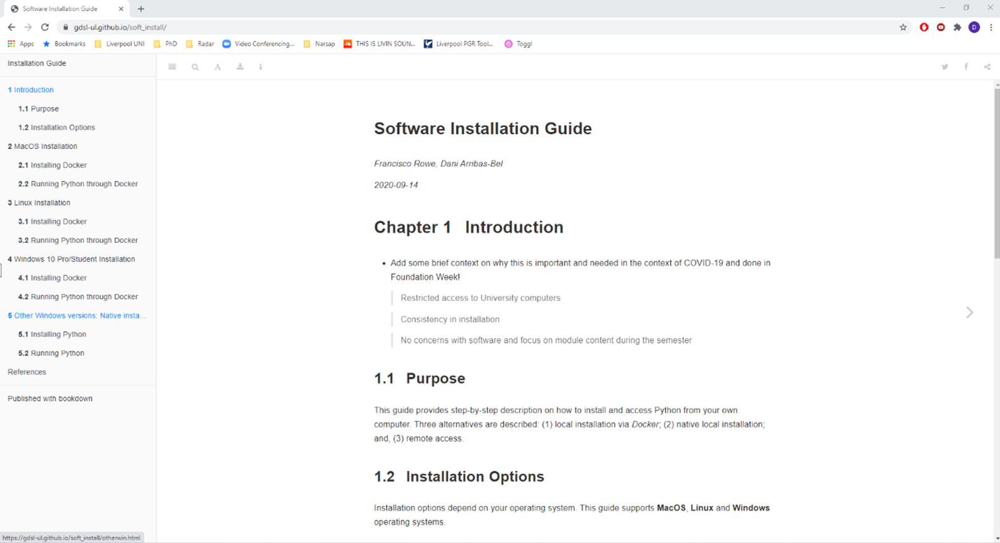
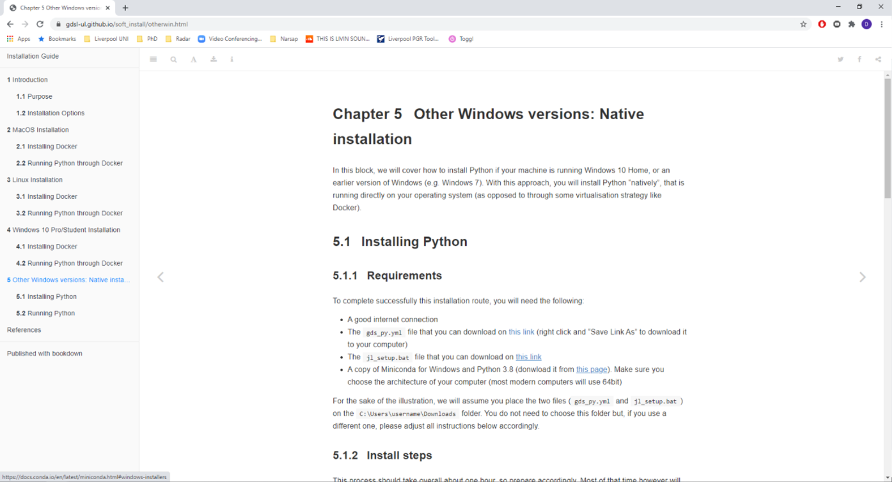
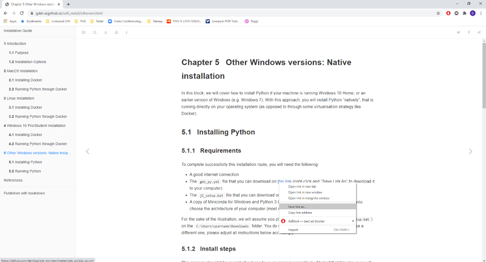
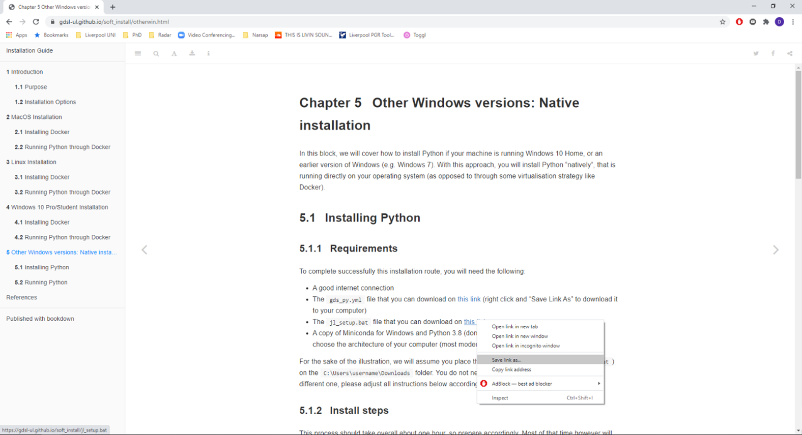
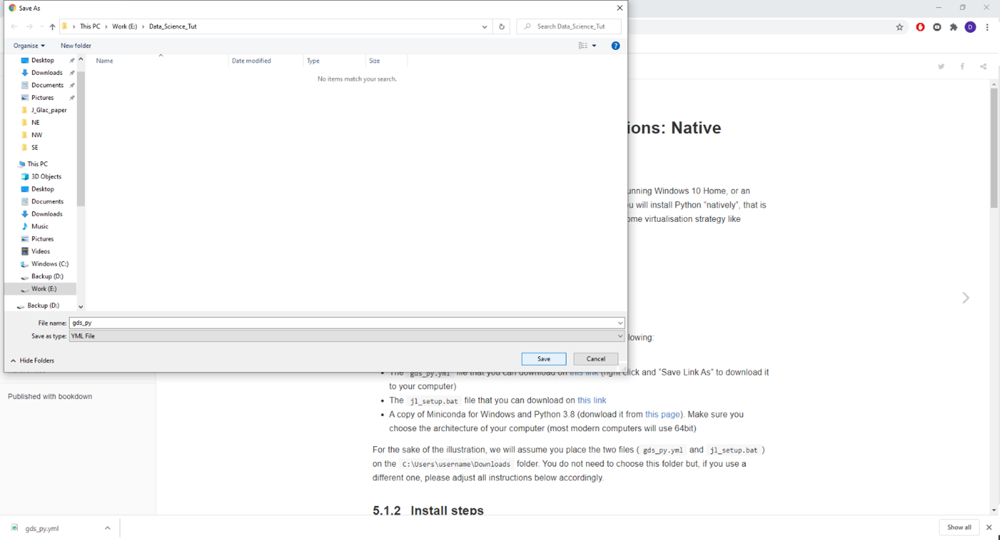

Chapter 5 Download Environment and Setup files

- From the main page of the installation guide, navigate to Other Windows versions, Native Installation

- This will bring you to the installation page with links (downloadable files) highlighted in blue.

- On the page, right click on the link for the gds_py.yml file highlighted in blue and select Save link as.
- A new window will pop up for saving the file, click on save to save the file.
- Make sure save the file to a location that you can easily find again.
NOTE: It would be best to create a dedicated folder (e.g. GDS_2020) for this module.

- Right click on the link for the jl_setup.bat file highlighted in blue and select Save link as

- A new window will pop up for saving the file, click on save to save the file.
- Make sure to save the file to a location (the same location as the gds_py.yml file) that you can easily find again.